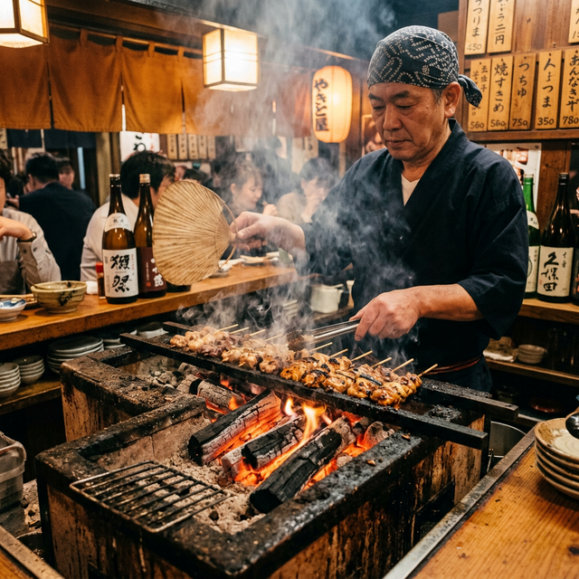
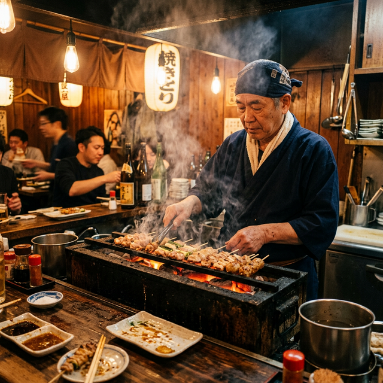
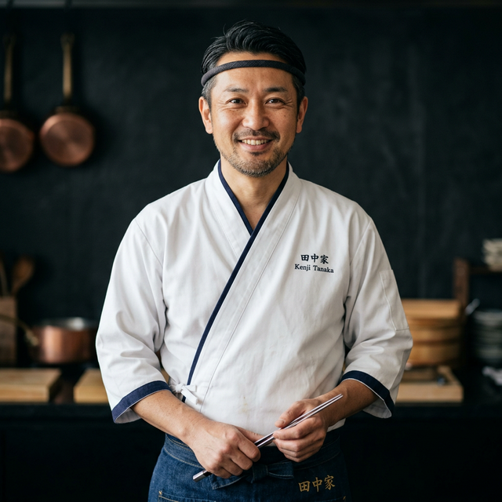
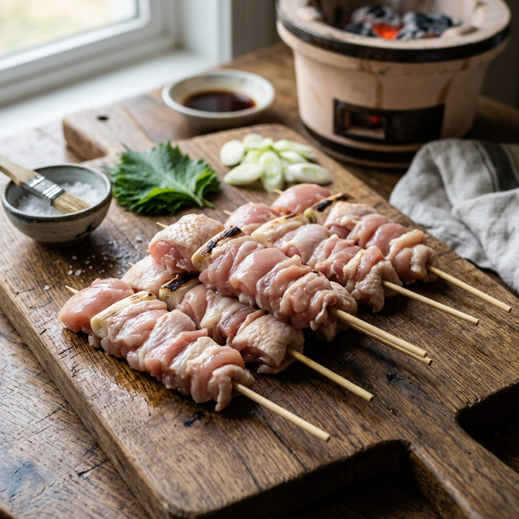
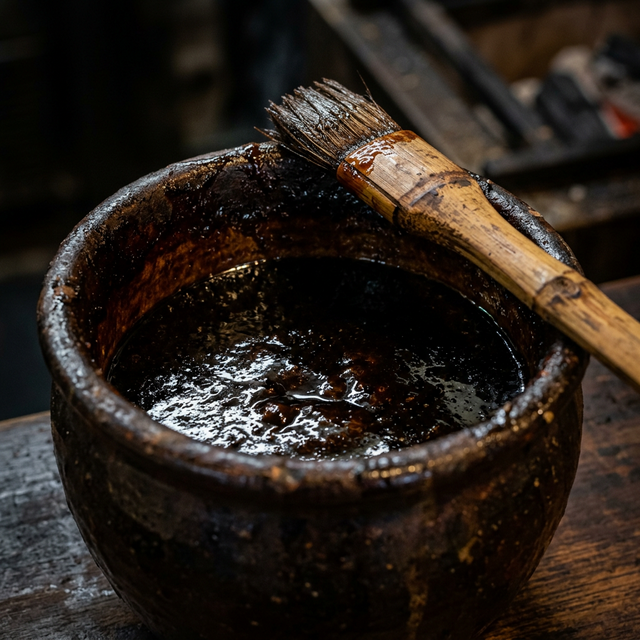
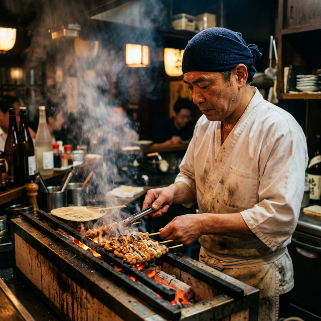
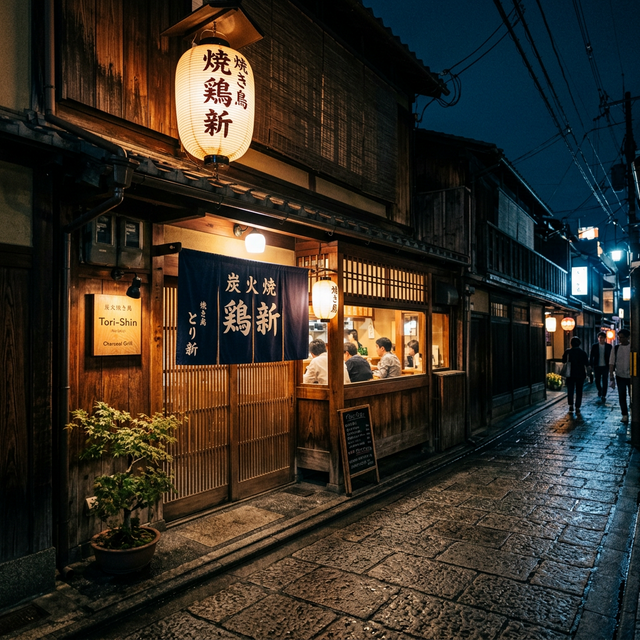

土田屋について
素材と炭火だけが語る、
焼き鳥の本質。
土田屋は、国産の厳選された鶏を使い、備長炭で一本一本丁寧に焼き上げる焼き鳥専門店です。余分なものは一切加えず、素材本来の旨みと炭火の香りだけで勝負する。それが土田屋の流儀です。
カウンター越しに見える炎の揺らめきと、炭火の音。その空間ごと、焼き鳥を楽しんでいただきたいと思っています。

土田 聖太郎
店主 / Chef & Owner
三つのこだわり
備長炭の
遠赤外線
土佐備長炭の安定した火力と遠赤外線効果が、素材の表面をすばやく焼き固め、旨みとジューシーさを中に閉じ込めます。

厳選した
国産鶏
毎朝仕入れる新鮮な国産銘柄鶏。部位ごとに最適な串打ちを行い、炭火焼きの美味しさを最大限に引き出します。

継ぎ足し続ける
秘伝のタレ
創業以来、一度も絶やすことなく継ぎ足し続けてきた秘伝のタレ。歳月が積み重なった深い甘みと複雑な旨みが特徴です。

店主紹介
「焼き鳥は、素材と火と時間が作るもの。
私はただ、その場に立ち会う人間です。」
東京の名店で10年間修業を積んだ後、故郷にて「土田屋」を開業。備長炭の扱い方、仕込みの丁寧さ、串の打ち方──どれひとつ妥協することなく、毎日カウンターに立ち続けています。
お客様の顔を見ながら焼き上げる、カウンター越しの焼き鳥。その一体感こそが、土田屋の醍醐味だと考えています。
土田 聖太郎
Seitaro Tsuchida
お知らせ
-
2025.06.10
お知らせ
夏季限定「冷やし鶏コース」のご案内
-
2025.05.20
営業情報
6月の定休日のお知らせ（毎週月曜日）
-
2025.04.05
メニュー
春の新メニュー「山椒香る鶏白レバー串」を追加しました
-
2025.03.01
お知らせ
ホームページをリニューアルしました
店舗情報

| 店名 | 土田屋（つちだや） |
|---|---|
| 住所 | 〒000-0000 ○○県○○市○○町1-2-3 |
| 電話 | 000-0000-0000 |
| 営業時間 | 17:00〜23:00（L.O. 22:30） |
| 定休日 | 毎週月曜日 （祝日の場合は翌火曜日） |
| 席数 | カウンター8席 / テーブル16席 |
| 予算 | お一人様 3,000円〜5,000円 |